이슈 관리 체계가 없던 환경에 워크플로우 · Priority 기준 · Root Cause 의무화 · 배포 게이트 · RC 검증 절차를 직접 설계하고, 규칙이 실제로 동작하도록 자동화까지 붙였습니다.
우선순위는 작성자 주관에 맡겨졌고, 버그 원인은 기록되지 않았으며, 미검증 빌드가 현장에 배포되는 사고가 있었습니다.
판단 기준을 명문화하고, 지켜지지 않으면 자동으로 되돌리는 규칙을 트래커에 걸었습니다.
“이거 QA 봐도 되나요?”가 필드 조건으로 치환되고, 배포 차단권이 QA에 명시적으로 생겼습니다.
Resolved는 개발이 “고쳤다”고 선언한 상태일 뿐입니다.
QA가 최종 검수한 뒤에만 Closed로 넘어갑니다.
티켓을 여는 사람과 닫는 사람을 분리해, 고쳤다는 말과 고쳐졌다는 확인이 섞이지 않게 했습니다.
In QA → In Development로 복귀.
RCA 미작성 상태로 Dev Complete를 시도하면 Automation이 자동으로 In Development로 복구합니다.
| 영역 | 기존 | 도입한 변화 |
|---|---|---|
| Priority 판단 | 작성자 주관에 의존 | 4단계 판단 Flow + 핵심 기능 목록 · 등급별 처리 SLA |
| 티켓 유형 | Bug/Task 혼재, 통계 불가 | Task Type 분리 → Bug에만 RCA 자동화 연결 |
| 결함 기록 | “수정 완료”만 남고 원인 유실 | Root Cause / Corrective Action 의무 작성 |
| 상태 전환 | 수동 전환, 누락·역행 빈번 | Git 이벤트 → 트래커 상태 자동 전환 |
| QA 진입 조건 | 구두 확인 필요 | Fix/RC Version 기입을 조건으로 자동화 |
| 브랜치 운영 | 명명 규칙 부재, 삭제 시점 모호 | 4종 브랜치 정의 + 네이밍·생애주기 규칙 |
“내 티켓은 다 Urgent”가 반복되던 상황이었습니다. 핵심 기능 목록(검사 실행·판정, 결과 조회, 모델 학습/배포, 사용자 인증, 데이터 저장·조회)을 따로 정의하고, 등급별 처리 SLA까지 약속해 Priority가 단순 라벨이 아니라 실제 처리 흐름으로 이어지게 했습니다.
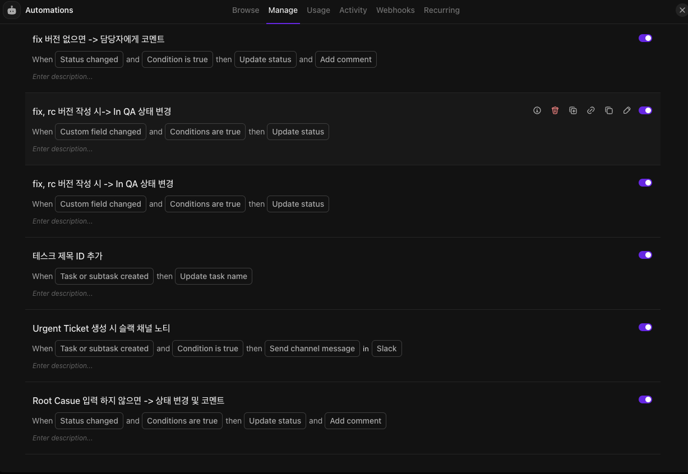
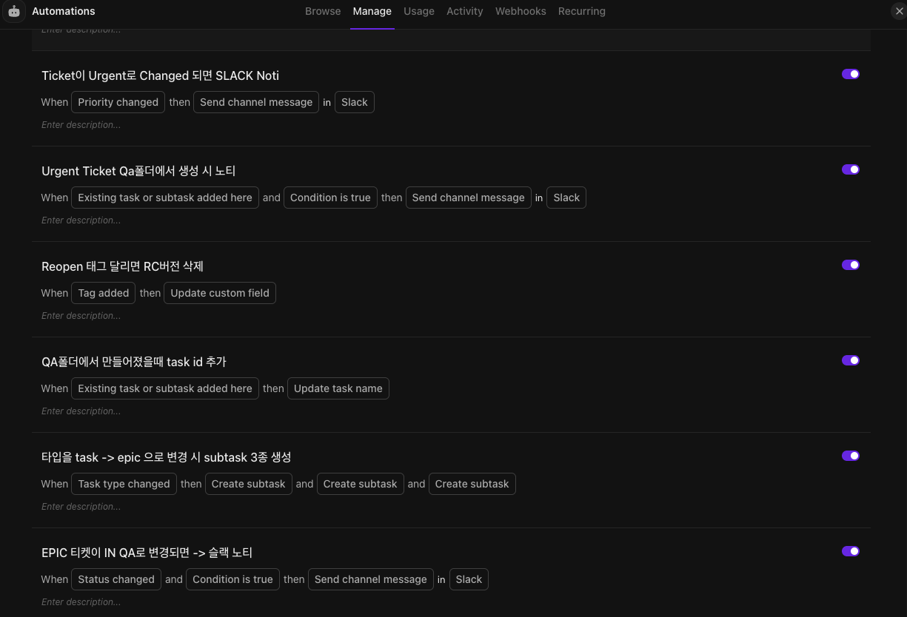
Root Cause 입력 하지 않으면 → 상태 변경 및 코멘트 — RCA 미작성 시 되돌리는 규칙fix, rc 버전 작성 시 → In QA 상태 변경 — 버전 필드를 QA 진입 조건으로Ticket이 Urgent로 변경되면 SLACK Noti — Priority SLA의 “즉시 전체 공유”를 규칙으로 보장
화면은 운영 중인 규칙 목록의 일부입니다. Epic 전환 시 하위 작업 3종 자동 생성, Reopen 태그 시 RC 버전 초기화, 폴더 기준 티켓 ID 자동 부여 등 티켓 생애주기 전반에 걸쳐 손이 가던 지점들을 규칙으로 옮겼습니다.
여러 프로젝트의 QA 요청이 DM·구두·여러 채널로 흩어져 들어왔고, 버전·일정·범위가 빠진 채 오기 일쑤였습니다. 슬래시 명령 하나로 접수를 일원화하고, 이후 알림까지 자동화했습니다.
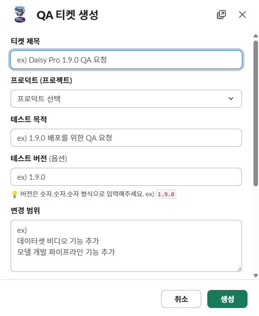
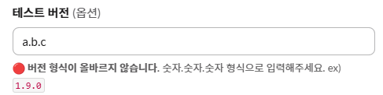
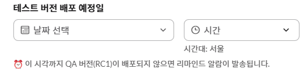
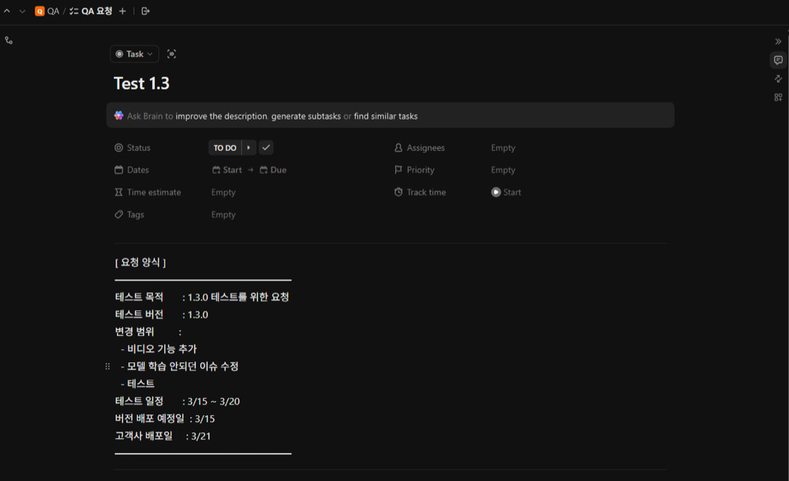
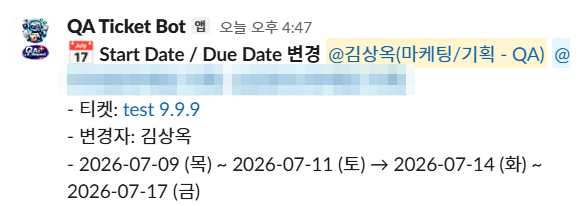
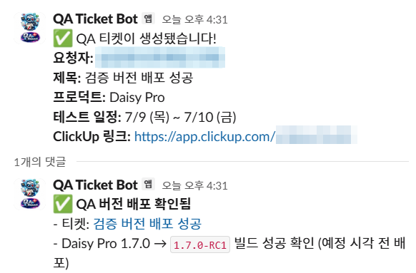
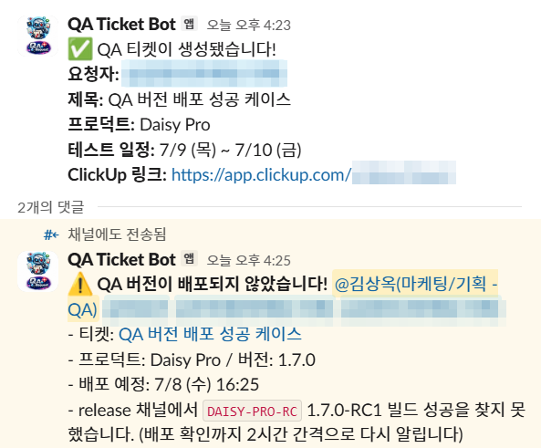
봇이 release 채널의 Jenkins 빌드 메시지를 감시하면서,
티켓에 적힌 버전의 RC1 빌드가 올라왔는지 스스로 확인합니다.
예정 시각이 지나도 못 찾으면 경고 + 관련자 멘션, 2시간 간격 재알림,
24시간 후 자동 종료.
| 상황 | 순진하게 만들면 | 실제 설계 |
|---|---|---|
| 날짜 최초 설정 | 변경으로 보고 알림 | 알림 없음 — 변경·삭제일 때만 |
| 시작일·마감일 동시 변경 | 알림 2건 | 1건으로 병합 |
| 예정 시각 전 배포 | 예정 시각까지 대기 | 확인 즉시 ✅ 처리 |
| 미배포 지속 | 1회 경고 후 방치 | 2시간 간격 재알림 |
| 계속 안 나옴 | 무한 반복 → 알람 피로 | 24시간 후 자동 종료 |
| 배포일이 변경됨 | 옛 시각 기준 오탐 | 1분 내 감지 → 새 기준 재동작 |
| 티켓이 삭제됨 | 고아 리마인더가 계속 울림 | 1분 내 자동 정리 |
| 판정 규칙 없는 제품 | 오탐 알림 | 티켓만 생성 · 리마인더 미동작 |
미검증 빌드가 고객사 현장에 배포된 인시던트가 있었습니다. 원인을 추적해보니 개인의 실수가 아니라 구조의 공백이었습니다 — 배포 대상 확인이 버전 라벨 기준으로만 이뤄졌고, QA 검증 완료와 배포 결정 사이에 명시적 연결 고리가 없었습니다.
인시던트를 책임 추궁이 아닌 프로세스 개선으로 전환했고, QA가 릴리즈 파이프라인의 형식적 참여자가 아니라 명시적 권한을 가진 게이트키퍼가 됐습니다.
RC 검증이 “상황마다 다르게” 진행되던 것을 반복 가능한 절차로 정립했습니다. QA 검증과 개발 수정이 병행되고, 준비되는 즉시 배포(상한 ≤1영업일)해 조기 수렴시킵니다.
| Exit Criteria | 기준 |
|---|---|
| 잔여 Urgent | 0건 (우선 게이트) |
| 잔여 High | 5건 미만 (건별 PM·PL 협의) |
| Pass Rate | 95% 이상 |
| Normal / Low | 개별 게이트 없이 Pass Rate에 포함 → Known Issue로 관리 |
개별 건을 놓고 매번 논쟁하는 대신 숫자로 판정 가능한 기준을 정의해 판정 비용을 줄였습니다. QA는 충족 여부를 보고하고, GO/NO-GO 결정은 PM이 합니다 — QA가 비즈니스 판단을 떠안지 않고 품질 사실에 집중할 수 있게 한 분리입니다. 프로덕션 긴급 수정은 Full Test 없이 자동화 기반 빠른 검증만 거치는 Hotfix 별도 트랙으로 분리해, 긴급 수정이 정규 절차를 무너뜨리지 않게 했습니다.
버전마다 마스터 시트에서 TC를 복사하고 결과를 각 버전 시트에 흩어 기록하다 보니, “이 TC가 버전을 거치며 어떻게 됐나”는 여러 시트를 눈으로 따라가야 했습니다. 회귀 대상 선별 · 버전별 요약 · 추적성 근거도 매번 수동이었습니다.
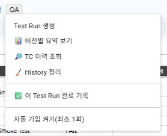
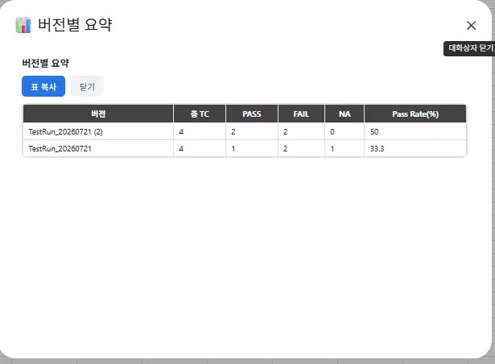
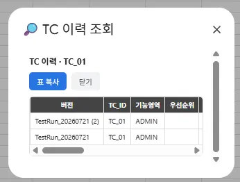
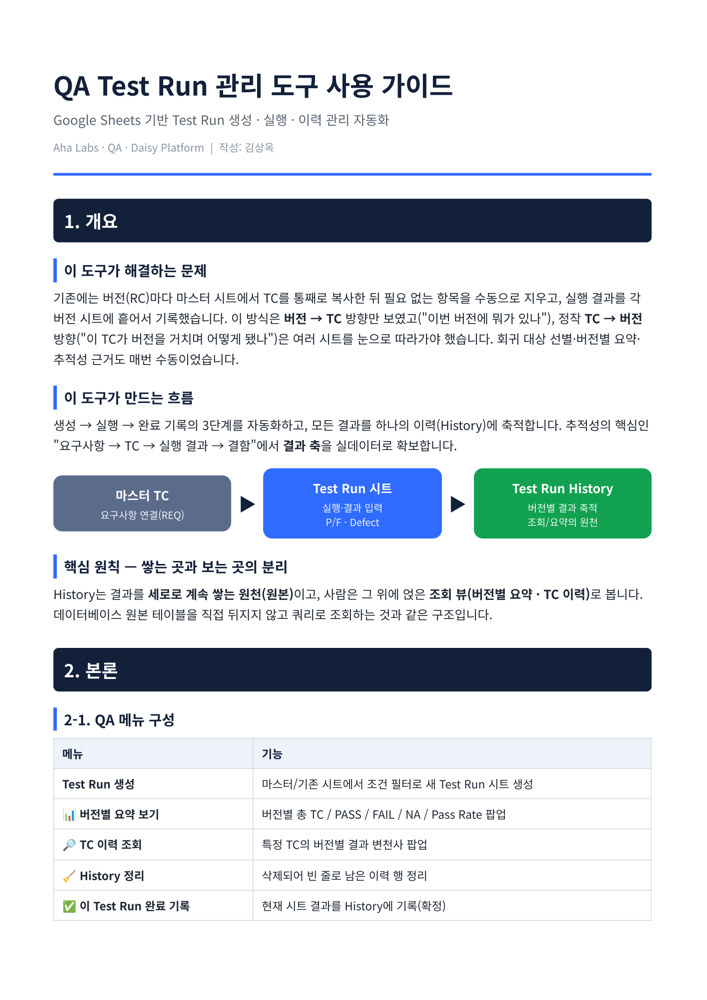
소스를 기존 Test Run 시트에서 RC1로 두고 필터를 P/F = FAIL, NA로 걸면,
RC1에서 깨졌거나 미검증인 항목만 P/F 빈 채로 승계됩니다.
RC 검증 절차의 “Retest + Regression”을 손이 아니라 도구가 계산합니다.
| 질문 | 답하는 방법 |
|---|---|
| 커버리지 — 이번 버전에 뭘 검증했나? | Test Run 시트 + 통계 블록 |
| 회귀 대상 — 과거 FAIL 난 TC는? | History 필터 / 승계 생성 |
| 배포 판단 — 이 버전 Pass율은? | 버전별 요약 (Exit Criteria와 직결) |
| 추적성 — 이 TC가 버전마다 어땠나? | TC 이력 조회 |
버그 티켓은 쌓이는데 근본 원인은 자유 서술로 흩어지거나 아예 기록되지 않았습니다. “어떤 유형의 원인이 반복되는가”를 아무도 정량적으로 답할 수 없었고, 구조화된 필드를 도입하자고 제안해도 설득 근거가 없었습니다.
표본이 아니라 전수를 봤습니다. 분류 체계를 먼저 정의하고 티켓을 끼워 맞춘 것이 아니라, 실제 티켓에서 반복 패턴을 추출해 카테고리를 만들었기 때문에 현장의 결함 양상을 그대로 반영합니다.